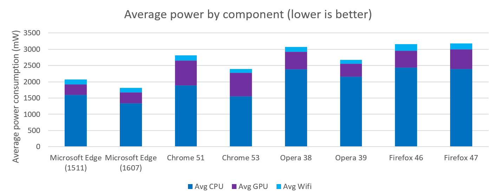

The Microsoft Windows team measured the average power consumption of the CPU, GPU, and Wifi antenna while Microsoft Edge, Chrome, Firefox, and Opera ran a complex yet representative set of user activities.
These tests were done on three Surface Books running Windows 10 Anniversary Update (build 14393.105) and connected to the Internet through Wifi. Actual power consumption of the CPU, GPU, and Wifi antenna were measured using onboard Maxim chips, and read through Performance Monitor (Perfmon).
The CPU, GPU, and Wifi antenna all used more power on the same workload when it was run using Chrome, Firefox, and Opera, when compared to Microsoft Edge, running on Windows 10 Anniversary Update (14393.105). Microsoft Edge used:
Edge, Chrome, and Opera had a lower mean power consumption when comparing the Anniversary Update (1607) to the previous release (1511) whereas Firefox had virtually no change. In the following graph, we also show Microsoft Edge (1511), Chrome 51, Opera 38, and Firefox 46 running on Windows 10 (1511). Those results are from our previous analysis. Here, we see the improvements made between the updated OS and the updated browsers since then.
The test was performed on 3 separate Surface Book laptops running Windows 10 Anniversary Update (14393.105 release). These computers were configured to the following settings, to increase consistency between measures and reduce tasks that may start during the measurement and interfere with the results, while still representing a realistic user setup:
| OS | Windows 10 Pro 14393.105 rs1_release |
| Microsoft Edge | Microsoft Edge 38.14393.0.0 |
| Chrome | Google Chrome 53.0.2785.101 m (64-bit) |
| Firefox | Firefox 47.0.1 |
| Opera | Opera 39.0.2256.71 (battery saver enabled) |
Firefox was not run on the most recent version because of a known limitation in Firefox 48.
The specifications for the Surface Books were:
Each browser was automated using WebDriver, a cross-platform tool designed for automating web browsing, and implemented by the major browsers. While the power draw was being measured, Webdriver executed the following activities:
Note that pauses are included throughout this workload, but are not included in this description for simplicity. Each scenario (one domain in one tab) lasts about a minute before the next tab is opened, though it varies by scenario.
The code used to execute the test can be found on Github.
Power was measured on the Surface Book because it has integrated hardware instrumentation that’s able to measure the real power consumption of the CPU, GPU and Wifi antenna while the automation is being executed. This is done using the Maxim 34407 Power Accumulator chip. The results of the Maxim chips were read using the built in Windows tool “Performance Monitor”. Performance Monitor was opened and configured to measure each component independently:
It was set to measure for a max duration of 1000s, recording once per second.
For each browser and for each device, 3 iterations on TH2 and 5 iterations on RS1 were measured through the following steps:
The following results combine the data collected in the previous analysis (on 1511 with browsers that were up to date at the time) with recent results on the Anniversary Update (1607) and newer browsers.